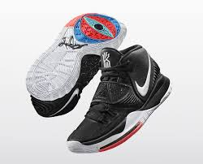
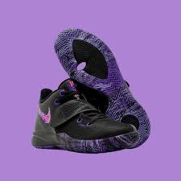
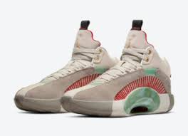
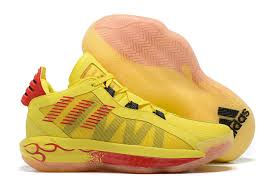
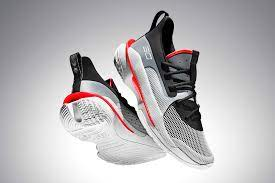

Elegir bien los accesorios dentro de la cancha te da un mejor rendimiento
Sabemos que el basketball fue diseñado para jugarse en un cancha con duela, pero al pasar los años los lugares
públicos se adueñaron de este deporte haciendo canchas de cemento las cuales era una superficie diferente y las
zapatillas tenían que ser de buenos materiales para que si tiempo de uso fuera largo.
Existen un sin fin de modelos de zapatillas para baloncesto, pero haremos una lista de las mejores zapatillas
para usar en calle.
Te preguntarás ¿Por qué en calle?, es simple, al ser un país como México, y siendo un deporte secundario, no
existen muchas canchas con duela de madera o tapete en el cual jugar. Por eso acudimos a canchas con
superficie de cemento en la cual encontramos adversidades extremas como el suelo duro, rasposo y rígido, a
veces con polvo, basura, tierra o piedras.
Tenemos que encontrar las zapatillas adecuadas para este tipo de superficie, en la cual la zapatilla no se
desgaste en tan poco tiempo.
Zapatillas
Kyrie 6

Este modelo por parte de Nike nos brinda un upper hecho de tejido rígido y fuerte en la parte
delantera del pie.También tiene una parte de cuero o piel en la parte del tobillo y talón, haciendo
de este par muy resistente para exterior y capaz de hacer cambios bruscos.
Kyrie Flytrap 3

Este modelo por parte de Nike es específico para exteriores teniendo un tejido rígido que cubre todo
el pie.Y una suela con líneas muy marcadas y profundas para un mejor agarre en la cacha.
Jordan XXXV

Por parte de la firma Jordan está este modelo con materiales resistentes para exterior.Aunque sea
algo caro por los buenos materiales que tiene, la tecnología que te brinda vale la pena. Teniendo
materiales de piel y cuero por todo el par, es un par que durará en la cancha.
D Rose 10
Por parte de Adidas está el modelo D. Rose 10 la cual es una zapatilla de caña media y algo tosca
para algunas personas.Tiene unos materiales de muy buena calidad y duraderos, tales como la suela
resistente. Indicada para exteriores.
Dame 6

Por parte de Adidas tenemos este modelo Dame 6 que si bien no es tan rígido de la parte del upper, es
muy resistente si suela, lo que hace especial para exterior.Aunque no sea rígido su upper, tiene
varias capas, por lo que durará buen tiempo.
Curry 7

Por parte de Under Armour tenemos este modelo Curry 7, que particularmente la marca Under Armour
tiene fama por tener una de las mejores suela y con mejor grip en el mercado, haciendo de este
modelo el indicado para usar en exterior.Además tiene tejidos rígidos que cubren todo el pie con
diferentes capas.
Objetivo de Mente en cancha
Este sitio ayuda a personas con dudas sobre el basketball.Es fundamental saber qué accesorios se
deben llevar dentro de una cancha, dependiendo la persona y la cancha.Mente en cancha te ayuda en
resolver este tipo de dudas.